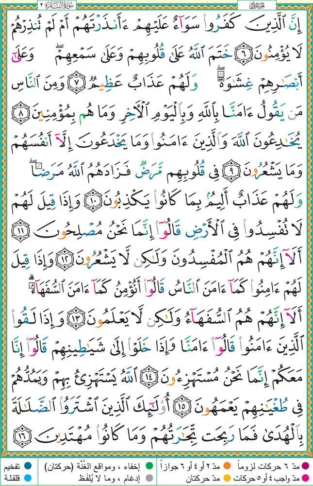

Memorize. Review. Strengthen.
Loading local Quran data...
Page 3 · Ayat 6–16. Begin at the outlined word.
A random ayah starts each new test. Continue to the end of the range; finish the last ayah if it crosses a page.
Sudais starts the prompt. Recite from the ayah’s beginning. Continue into the next ayah naturally; ask for “Repeat” when you need a cue.
